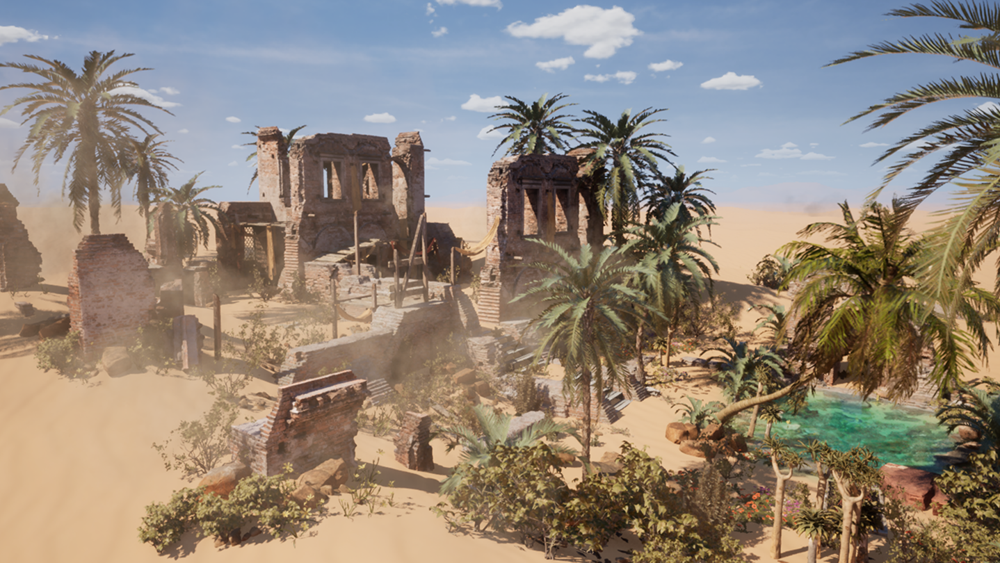
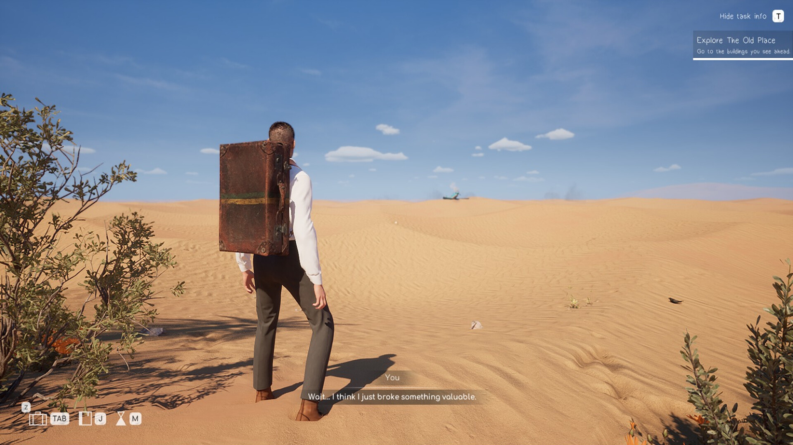
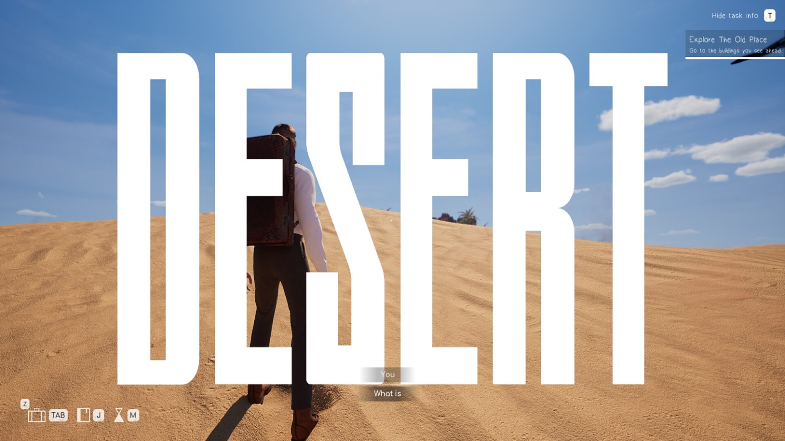
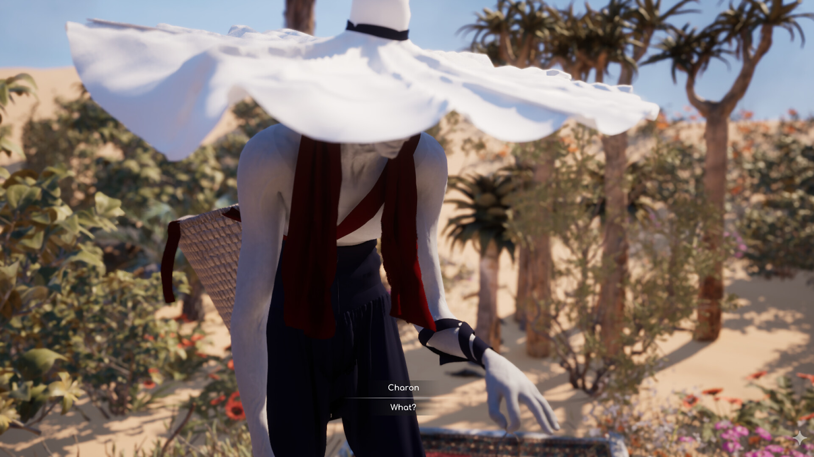
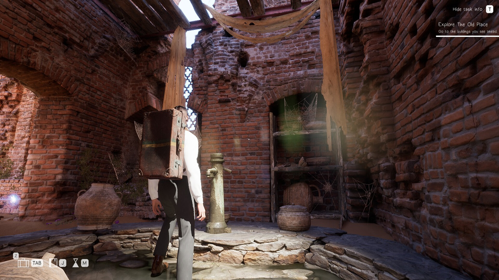

Barzakh: Star Gardener
Küçük Prens ve tasavvufî mistisizmden ilham alan, hayat ile ölüm arasındaki perdede geçen atmosferik bir TPS bulmaca yolculuğu.

Bir oyunu oynatmak ile bir düşünceyi tecrübe ettirmek aynı şey değildir.
Bir uçak kazasından sağ kurtulup yaşam ile ölüm arasındaki perdeye (Barzakh) adım atan bir ruhun hikâyesi... Barzakh: Star Gardener, fiziki gerçekliğin kurallarını büken bulmacaları çözerken kayıp yıldızları topladığınız ve zihninizin derinliklerinde bir bahçe yetiştirdiğiniz atmosferik bir yolculuktur.
Antoine de Saint-Exupéry'nin Küçük Prens eserindeki çocuksu arayış ile Doğu felsefesinin gaybî eşiklerini harmanlayan oyunda, çıkışın tek yolu kendi içine yönelmektir. Oyuncunun karşılaştığı her mekanik, mekânın mistik hikâyesiyle doğrudan bağ kurar.
Lumen Aydınlatma ve Mistik Atmosfer
Unreal Engine 5.5'in Lumen dinamik küresel aydınlatma mimarisini kullanarak, yıldız ışığı ile karanlık arasındaki derin kontrastı hissettiren gerçek zamanlı bir atmosfer kurdum.

Fizik Büken Bulmaca Tasarımı
Zamanı ve çekim kuvvetini manipüle eden bulmaca mekanikleriyle, oyuncunun fiziksel dünyayı yeniden düşünmesini sağlayan çevre etkileşimleri inşa ettim.
C++ Çekirdek Etkileşim Mimarisi
Fizik etkileşimleri ve bulmaca tetikleyicileri saf C++ sınıfları ile yazıldı. Performans kaybı yaşanmadan 100+ obje ile anlık etkileşim sağlandı.
Yıldız Toplama & Zihinsel Bahçe
Zihindeki bahçenin gelişimini ve yıldız envanterini takip eden modüler state machine yapısı kurgulandı.
HLSL Custom Shaders
Unreal Engine materyal grafiklerinde özel HLSL doku ve atmosferik sis gölgelendiricileri geliştirildi.
Scope Disiplini Hayati Önem Taşır
Felsefi kurguyu genişletme isteğinin prodüksiyon süresini uzatabileceğini; odaklanmış bir mekanik döngüsünün devasa bir haritadan daha değerli olduğunu tecrübe ettim.
Bulmacalar Oyuncuyu Cezalandırmamalı
Zorlayıcı bulmacaların oyuncu akışını kırdığını fark ettim. İpuçlarını çevre estetiğine sindirerek daha organik bir keşif hissi yarattım.
Atmosfer Disiplinli Kod İster
Işık, ses ve kamera açılarının tek bir karede uyum yakalaması için draw call optimizasyonlarının ve GPU profillemenin önemi netleşti.


